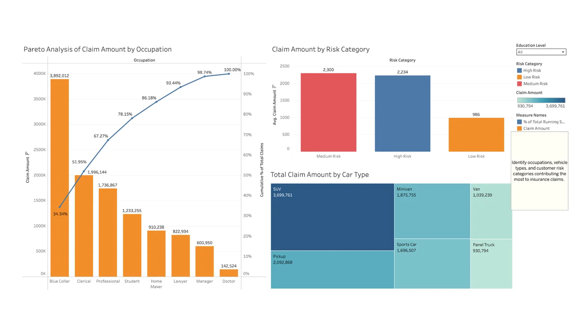

Data Science Data Visualization · Insurance
Car Insurance Claims Dashboard




Shows a car insurer who claims, how often and how much, to support underwriting, pricing and risk management. A six-part interactive Tableau story with calculated fields, parameters and eight chart types, ending in an executive dashboard and recommendations.
- $11.33Min claims across 7,647 policyholders
- 34.3%of all claims from blue-collar drivers ($3.89M); SUVs account for 32.6%
- $2,300 vs $986average claims of medium-risk against low-risk policyholders
Approach
A car insurer wants to know who claims, how often and how much, to support underwriting, pricing and risk management.
- Data. 7,647 policyholders with 21 fields: driver demographics, income and education, vehicle type, value and age, claims in the past five years and the current claim amount, $11.3 million in total.
- Method. A six-part Tableau story: customer demographics, claim behavior, financial risk, vehicle value, an executive dashboard, and a summary with recommendations. Calculated fields for driver age group and risk category, parameters for education level and a metric selector, and eight chart types, including Pareto, treemap, bubble and highlight table.
- Result. Blue-collar drivers account for $3.89M (34.3%) of all claims and SUVs for $3.70M (32.6%). Medium- and high-risk policyholders average $2,300 and $2,234 in claims, more than twice the $986 of low-risk ones, and claims per driver over five years range from 0.70 for lawyers to 0.90 for students.
- Recommendation. Move to risk-based premiums that weigh occupation, vehicle type and vehicle age, strengthen underwriting and fraud checks for the higher-risk segments, review pricing for high-value vehicles, and give underwriting, pricing and management teams the interactive dashboard.
From the Start
-
Customer demographics
Who the policyholders are: age group, education and income.
-
Claim behavior
How often each group claims, by occupation and vehicle age.
-
Financial risk
Where the money goes: a Pareto chart by occupation, risk categories and a treemap.
-
Vehicle value
Average vehicle value by car type and marital status, and total claims by car type.
-
Executive dashboard and summary
The key views on one interactive page, then a summary with recommendations for underwriting, pricing and risk management.